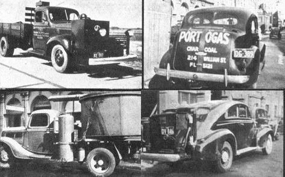

Dear MOTHER:
In MOTHER No. 25, C. and T. Martin asked about powering cars with gas generated from solid fuel. I have some firsthand experience with this technique and would like to share what I know.
During World War II - when I lived on a farm in Germany - liquid fuel was almost non-existent and many tractors, trucks and autos were converted to wood gas. A tank which looked like a large hot water heater was mounted on the vehicle. You prepared the system for use by filling the container with wood blocks the size of a fist and closing the lid. Then you switched on an electric or hand-cranked blower which applied suction to the bottom of the tank near the grate. Next, you stuck a burning torch through a hole into the lower part of the generator and lit a smoldering fire which was fanned by the stream of air.
To find out if the gas generated by the burning wood was good enough to run the engine, you held a torch to the exhaust of the blower. If the result was a long hot flame, you switched off the fan and turned a valve which piped the gas to the manifold (via a mixing valve that combined the fuel with air). Then you turned on the starter and the engine would catch . . . usually, anyway.
Actually, any combustible material can be turned into a gas by means of a smoldering combustion process similar to that in a burning cigarette. (Even cigarette smoke, for example, will burn if mixed with air in the right proportions.) The gas generator therefore offers an alternative method for powering an auto with pig manure . . . provided the droppings, or whatever you use, are fairly dry. The fuel has to have the right moisture content: Too wet, and it won't burn. Too dry, and it will burn too hot, turning the ashes into slag (which causes stoppage) and perhaps melting the grate too. Also, a certain amount of moisture contributes greatly to power because the water molecules are split into H 2 and 0 by the intense heat.
The engine exhaust is non-polluting (well, comparatively so, anyway . . . see Travis Brock's article for details. - MOTHER) but the engine itself will get badly fouled unless you remove fly ash and tar from the gas by cooling and filtering (or perhaps by running it through a hookah, which we could build with technology already existing in the alternative culture).
A German textbook I found on the subject states that a generator fueled with hardwood will produce a gas with a heating value of 1,250 kilocalories per cubic meter, consisting of 10.5% CO2, 0.4% CH, 1.6% CH2, 22% CO, 47.3% N2. The N2 and CO2 are non-combustible and contribute no power. Therefore, it helps if your vehicle has a big engine to start out with. (I remember that a wood-burning truck usually stopped at the bottom of a hill and the driver would get out, open the lid on the generator and stir around inside with a long poker to increase the gas output temporarily.)
Nevertheless, this system is quite workable if you don't mind the extra time required for start-up, for cleaning and maintenance and for preparing the fuels (chopping hardwood into small blocks, for instance, or converting powdery substances such as manure into non-compacting pellets).
Bernd Richelmann
San Diego, California
|
 |
|
|